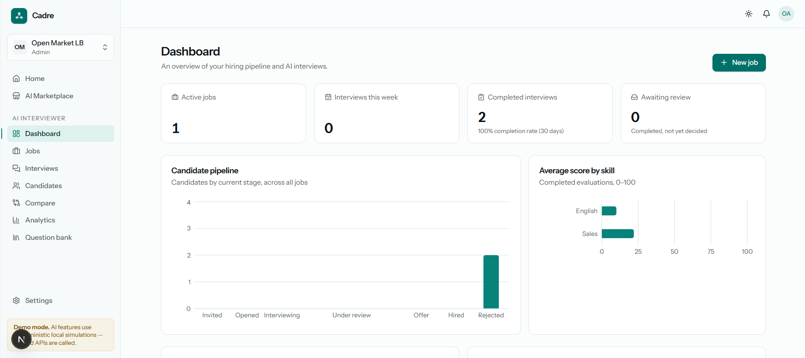
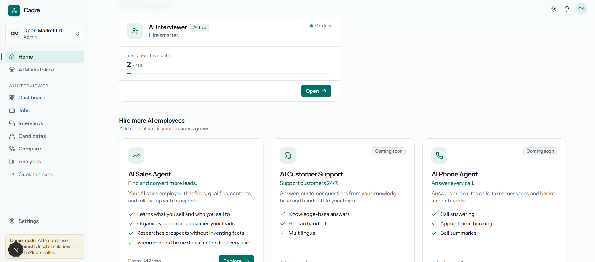
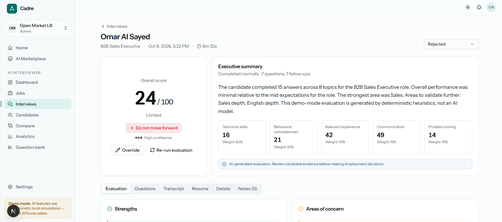
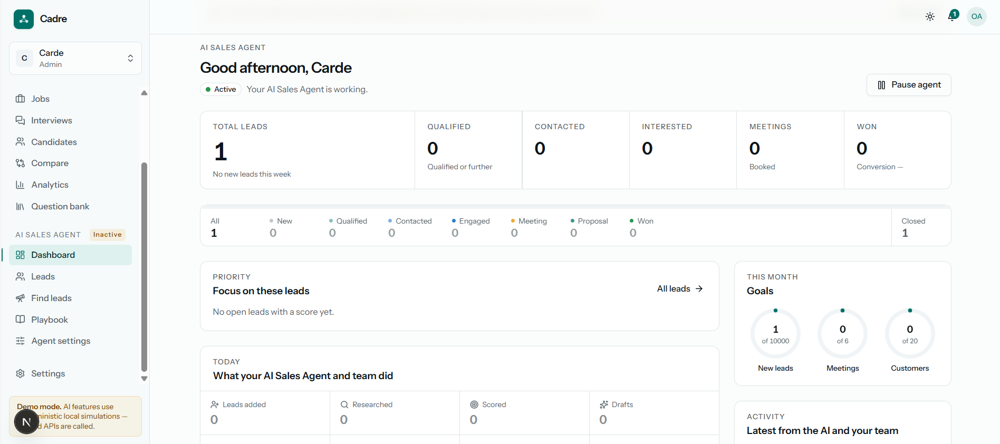
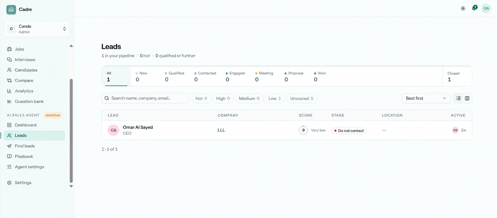

03 · AI Platform · Recruitment
Cadre
An AI hiring platform built to help teams hire smarter — an AI Interviewer that screens and scores candidates, with a growing marketplace of AI agents.
Overview
Cadre is an AI-powered hiring platform. At its core is an AI Interviewer that runs structured interviews, then produces a scored evaluation — an overall 0–100 result broken down by weighted competencies like technical skills, communication, and relevant experience, complete with strengths, areas of concern, transcript, and a hiring recommendation.
Around the interviewer sits a full recruitment workspace: a candidate pipeline across every stage, interview and candidate management, side-by-side comparison, analytics, and a reusable question bank. An AI Marketplace lets a company add more AI "employees" — an AI Sales Agent, Customer Support, and Phone Agent — as the business grows.
Highlights
- AI Interviewer that conducts interviews and scores candidates 0–100 across weighted skills.
- Candidate pipeline, interviews, compare, and analytics in a single dashboard.
- AI Marketplace to add more AI agents — Sales, Support, Phone — on demand.
- Clean, data-rich admin UI with light and dark modes.
Gallery




